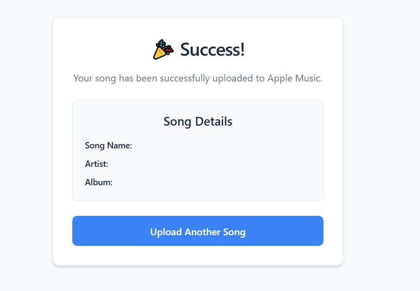

Gallery

Streamlined Flask service to download tracks from SoundCloud/YouTube and add them to your Apple Music library.
← Back to HomeA personal Flask-based web service that leverages SoundCloud and YouTube download APIs and macOS AppleScript to automate music ingestion into Apple Music. Accessible from any device on your local network, this tool streamlines capturing and uploading your favorite tracks.
git clone https://github.com/BaileyHelfer/upload_amusic.gitpython3 -m venv venv && source venv/bin/activatepip install -r requirements.txtconfig.yamlpython main.pyhttp://localhost:5000 in browser or phoneWith no official API for Apple Music uploads, macOS AppleScript provided the only reliable path—albeit a workaround—requiring user login in the Music app.
I wanted a seamless way to save streamed music into my personal library without manual downloads and file transfers. This service automates that flow end-to-end.
Fork the repo, open issues or pull requests—MIT licensed and open to community improvements.